UI 原图切片 · 59 个 PNG
原图 1672 × 941。保持原始像素，不是透明去背素材；卡牌遮挡与截断未补画。
使用说明 · 坐标清单
顶部状态栏
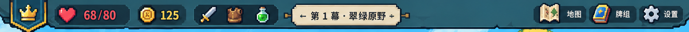
hud/top_status_bar.png
(0, 0) · 1672 × 80
原图矩形切片，保留背景及烘焙文字hud/crown_badge.png
(20, 0) · 99 × 82
原图矩形切片，保留背景及烘焙文字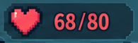
hud/health_panel.png
(127, 7) · 195 × 61
原图矩形切片，保留背景及烘焙文字hud/gold_panel.png
(332, 10) · 123 × 57
原图矩形切片，保留背景及烘焙文字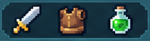
hud/equipment_panel.png
(468, 8) · 211 × 59
原图矩形切片，保留背景及烘焙文字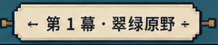
hud/chapter_banner.png
(689, 6) · 308 × 64
原图矩形切片，保留背景及烘焙文字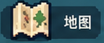
hud/map_button.png
(1294, 7) · 133 × 55
原图矩形切片，保留背景及烘焙文字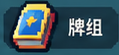
hud/deck_button.png
(1426, 8) · 119 × 55
原图矩形切片，保留背景及烘焙文字hud/settings_button.png
(1547, 9) · 118 × 55
原图矩形切片，保留背景及烘焙文字hud/preparation_badge.png
(730, 79) · 214 × 55
原图矩形切片，保留背景及烘焙文字装备与遗物图标
icons/heart.png
(137, 15) · 56 × 45
原图矩形切片，保留背景及烘焙文字icons/gold_coin.png
(338, 15) · 44 × 46
原图矩形切片，保留背景及烘焙文字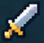
icons/equipment_sword.png
(482, 13) · 49 × 48
原图矩形切片，保留背景及烘焙文字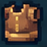
icons/equipment_armor.png
(548, 15) · 47 × 47
原图矩形切片，保留背景及烘焙文字icons/equipment_potion.png
(620, 14) · 36 × 48
原图矩形切片，保留背景及烘焙文字icons/relic_leaf.png
(69, 80) · 54 × 53
原图矩形切片，保留背景及烘焙文字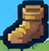
icons/relic_boot.png
(133, 81) · 49 × 51
原图矩形切片，保留背景及烘焙文字icons/relic_crystal.png
(200, 80) · 45 × 54
原图矩形切片，保留背景及烘焙文字icons/relic_mushroom.png
(258, 81) · 52 × 54
原图矩形切片，保留背景及烘焙文字icons/relic_ring.png
(324, 81) · 47 × 55
原图矩形切片，保留背景及烘焙文字icons/relic_clover.png
(383, 81) · 49 × 54
原图矩形切片，保留背景及烘焙文字 战斗控制
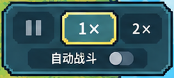
controls/battle_control_panel.png
(1384, 617) · 250 × 112
原图矩形切片，保留背景及烘焙文字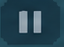
controls/pause_button.png
(1402, 635) · 64 × 47
原图矩形切片，保留背景及烘焙文字controls/speed_1x_selected.png
(1468, 632) · 88 × 54
原图矩形切片，保留背景及烘焙文字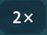
controls/speed_2x_button.png
(1558, 636) · 60 × 45
原图矩形切片，保留背景及烘焙文字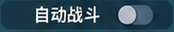
controls/auto_battle_row.png
(1423, 686) · 174 × 32
原图矩形切片，保留背景及烘焙文字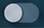
controls/auto_battle_toggle.png
(1537, 688) · 44 × 28
原图矩形切片，保留背景及烘焙文字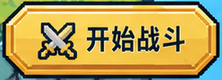
controls/start_battle_button.png
(1386, 730) · 248 × 90
原图矩形切片，保留背景及烘焙文字单位参考
units/knight.png
(315, 269) · 119 × 102
原图矩形切片，保留背景及烘焙文字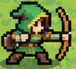
units/archer.png
(539, 337) · 97 × 88
原图矩形切片，保留背景及烘焙文字units/priest.png
(397, 455) · 108 × 104
原图矩形切片，保留背景及烘焙文字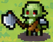
units/goblin_left.png
(1183, 329) · 88 × 70
原图矩形切片，保留背景及烘焙文字units/goblin_right.png
(1353, 329) · 85 × 70
原图矩形切片，保留背景及烘焙文字units/goblin_bottom_left.png
(1201, 481) · 87 × 69
原图矩形切片，保留背景及烘焙文字units/goblin_bottom_right.png
(1357, 481) · 86 × 69
原图矩形切片，保留背景及烘焙文字 单位血条与状态
unit_hud/knight_health_bar.png
(302, 373) · 122 × 19
原图矩形切片，保留背景及烘焙文字unit_hud/archer_health_bar.png
(523, 428) · 116 × 22
原图矩形切片，保留背景及烘焙文字unit_hud/priest_health_bar.png
(383, 565) · 116 × 20
原图矩形切片，保留背景及烘焙文字unit_hud/goblin_health_bar.png
(1183, 402) · 114 × 20
原图矩形切片，保留背景及烘焙文字unit_hud/attack_icon.png
(304, 396) · 33 × 31
原图矩形切片，保留背景及烘焙文字unit_hud/shield_icon.png
(374, 396) · 29 × 30
原图矩形切片，保留背景及烘焙文字unit_hud/tree_status_icon.png
(592, 451) · 31 × 33
原图矩形切片，保留背景及烘焙文字unit_hud/healing_status_icon.png
(451, 588) · 33 × 32
原图矩形切片，保留背景及烘焙文字unit_hud/skull_status_icon.png
(1266, 573) · 33 × 31
原图矩形切片，保留背景及烘焙文字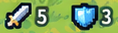
unit_hud/knight_stats_row.png
(303, 395) · 118 × 33
原图矩形切片，保留背景及烘焙文字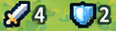
unit_hud/enemy_stats_row.png
(1351, 425) · 116 × 31
原图矩形切片，保留背景及烘焙文字 卡牌整体
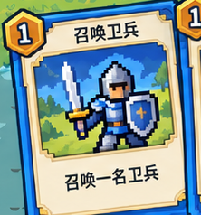
cards/card_summon_guard.png
(360, 703) · 222 × 238
原图切片；旋转、重叠及画面边缘截断未修复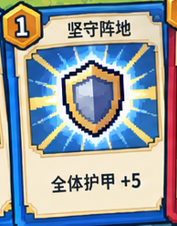
cards/card_hold_position.png
(552, 693) · 194 × 248
原图切片；旋转、重叠及画面边缘截断未修复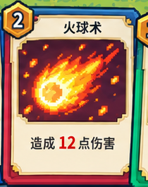
cards/card_fireball.png
(730, 676) · 210 × 265
原图切片；旋转、重叠及画面边缘截断未修复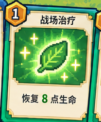
cards/card_battlefield_heal.png
(913, 690) · 208 × 251
原图切片；旋转、重叠及画面边缘截断未修复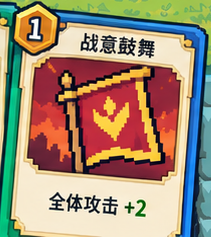
cards/card_battle_inspiration.png
(1096, 704) · 211 × 237
原图切片；旋转、重叠及画面边缘截断未修复卡面插画
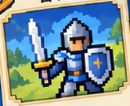
card_art/art_summon_guard.png
(393, 748) · 163 × 134
倾斜卡画的外接矩形，含边框或卡底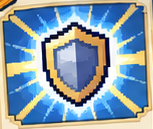
card_art/art_hold_position.png
(578, 737) · 153 × 129
倾斜卡画的外接矩形，含边框或卡底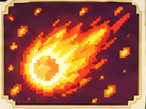
card_art/art_fireball.png
(752, 730) · 165 × 123
倾斜卡画的外接矩形，含边框或卡底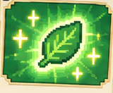
card_art/art_battlefield_heal.png
(936, 744) · 160 × 132
倾斜卡画的外接矩形，含边框或卡底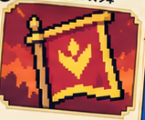
card_art/art_battle_inspiration.png
(1125, 758) · 159 × 132
倾斜卡画的外接矩形，含边框或卡底能量
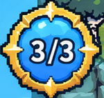
energy/energy_orb_3_of_3.png
(41, 688) · 150 × 142
原图矩形切片，保留背景及烘焙文字抽牌与弃牌堆
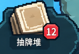
piles/draw_pile_with_count.png
(0, 830) · 160 × 111
原图矩形切片，保留背景及烘焙文字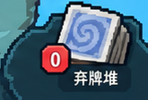
piles/discard_pile_with_count.png
(1507, 829) · 165 × 112
原图矩形切片，保留背景及烘焙文字